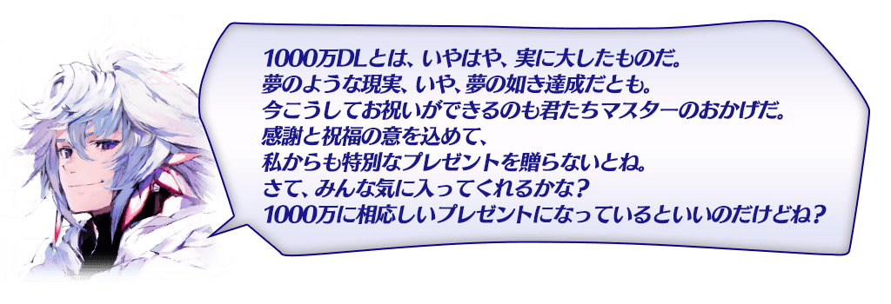
◆舉辦期間◆
2017年9月20日(三) 17:00～10月4日(三) 11:59
在下述的舉辦期間中登入的話，贈送可從對象★4(SR)Servant全42位之中，交換1位喜愛的「1000萬DL記念券」1張！
◆舉辦期間◆
2017年9月20日(三) 17:00～9月27日(三) 11:59
※請注意超過上述舉辦期限的話無法領取「1000萬DL記念券」。
◆於達文西工房的交換條件◆
通過「特異點F 炎上汙染都市 冬木」的Master對象
◆「1000萬DL記念券」交換期間◆
2017年9月24日(日) 17:00～10月4日(三) 11:59
※「1000萬DL記念券」在達文西工房點擊以期間限定顯示的活動橫幅，就可交換贈送對象的Servant。請注意未滿足情況和超過交換期間的話是無法交換的。
◆贈送對象Servant◆
| 職階 | Servant名 |
|---|---|
| Saber | 阿爾托莉亞・潘德拉剛〔Alter〕、高文、齊格飛、夏爾・德翁、鈴鹿御前、尼祿・克勞狄烏斯、羅摩、蘭斯洛特 |
| Archer | 阿塔蘭塔、Emiya、Emiya〔Alter〕、崔斯坦 |
| Lancer | 阿爾托莉亞・潘德拉剛〔Alter〕、弗拉德三世〔EXTRA〕、伊莉莎白・巴托里、芬恩・麥克庫爾、美杜莎、李書文 |
| Rider | 阿斯托爾福、安妮・伯妮＆瑪莉・瑞德、瑪莉・安東尼、瑪爾大 |
| Caster | 海倫娜・布拉瓦茨基、吉爾伽美什、湯瑪斯・愛迪生、童謠、尼托克里絲、美狄亞〔Lily〕 |
| Assassin | Emiya〔Assassin〕、卡米拉、新宿的Assassin、絲西娜、不夜城的Assassin |
| Berserker | 茨木童子、黃金國的Berserker、玉藻貓、弗蘭肯斯坦、貝奧武夫、海克力斯、蘭斯洛特 |
| Avenger | 戈爾貢、新宿的Avenger |
※「1000萬DL記念券」就算未通過「特異點F 炎上汙染都市 冬木」，只在舉辦期間內登入也可入手。
※對象的Servant不包含期間限定Servant及活動報酬的Servant。
※阿爾托莉亞・潘德拉剛〔Alter〕(Saber)、高文、尼祿・克勞狄烏斯(Saber)、Emiya〔Alter〕、崔斯坦、阿爾托莉亞・潘德拉剛〔Alter〕(Lancer)、李書文、湯瑪斯・愛迪生、美狄亞〔Lily〕、戈爾貢就算未通過章節也能交換。
在進行Servant及概念禮裝的強化時，大成功(經驗值2倍加成)・極大成功(經驗值3倍加成)發生機率以期間限定變成2倍。
無論如何藉此機會強化中意的Servant和概念禮裝吧！
◆舉辦期間◆
2017年9月20日(三) 17:00～9月27日(三) 11:59

強化Servant及概念禮裝時所必須的QP消耗量，以期間限定變成1/2！
配合大成功&極大成功發生率2倍，無論如何別錯過這麼實惠的機會！
◆舉辦期間◆
2017年9月20日(三) 17:00～9月27日(三) 11:59
※請注意Servant的技能強化、靈基再臨、Servant寶具強化、聖杯轉臨、靈衣開放為對象外。
在迦勒底之門內每日出現的關卡「宝物庫の扉を開け」初級、中級、上級、超級全部的AP消耗量以期間限定變成1/2。
「宝物庫の扉を開け」，能獲得大量的QP做為戰利品。
◆舉辦期間◆
2017年9月20日(三) 17:00～9月27日(三) 11:59
◆對象關卡◆
寶物庫的扉開け 初級、中級、上級、超級
【宝物庫の扉を開け 關卡的難易度等】
| 難易度 | 推薦Lv | 消耗AP | 初次通過報酬 |
|---|---|---|---|
| 初級 | 5 | 10→5 | 魔力稜鏡 1個 |
| 中級 | 10 | 20→10 | 魔力稜鏡 2個 |
| 上級 | 25 | 30→15 | 魔力稜鏡 3個 |
| 超級 | 40 | 40→20 | 魔力稜鏡 4個 |
※關卡通過報酬的魔力稜鏡是只有初次通過時才可獲得。
由於通過報酬每天都會重置，每天不斷通過吧！
對一定期間未登入的Master對象，以期間限定舉辦「回歸登入獎勵！」。
在下述期間中，7天內連續登入的話，贈送合計聖晶石48個和呼符10張等豪華報酬！
※請注意連續登入天數中斷的話，無法領取之後的禮物。
◆對象◆
2017年3月31日(五) 23:00以後未登入的Master對象
◆舉辦期間◆
2017年9月20日(三) 17:00～9月28日(四) 2:59
| 連續登入天數 | 贈送內容 |
|---|---|
| 第1天 |
聖晶石 1個 友情點數 2,000pt 叡智的猛火 ALL★4(SR) 1張 黃金的果實 1個 |
| 第2天 |
聖晶石 2個 友情點數 2,000pt 叡智的猛火 ALL★4(SR) 1張 黃金的果實 1個 |
| 第3天 |
聖晶石 3個 友情點數 2,000pt 叡智的猛火 ALL★4(SR) 1張 黃金的果實 1個 |
| 第4天 |
聖晶石 5個 友情點數 2,000pt 叡智的猛火 ALL★4(SR) 1張 黃金的果實 1個 |
| 第5天 |
聖晶石 7個 友情點數 2,000pt 叡智的猛火 ALL★4(SR) 1張 黃金的果實 1個 |
| 第6天 |
聖晶石 10個 友情點數 2,000pt 叡智的猛火 ALL★4(SR) 1張 黃金的果實 1個 |
| 第7天 |
聖晶石 20個 友情點數 2,000pt 叡智的猛火 ALL★4(SR) 10張 呼符 10張 黃金的果實 10個 100萬QP |
※第1天的回歸登入獎勵會在9月20日(三) 17:00以後配發。
※之後的的回歸登入獎勵會在AM3:00配發。
※最多能領取7次，但根據開始遊戲的時間點，可能無法到此上限。
|
記念｢1000萬DL突破宣傳活動」舉辦實施特別登入獎勵。 ◆舉辦期間◆ 2017年9月21日(四) AM3:00～9月28日(四) AM2:59 |
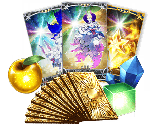 |
| 連續登入天數 | 贈送內容 |
|---|---|
| 第1天 | 英靈結晶・星之芙芙ALL★3(HP) 10張 |
| 第2天 | 叡智的猛火ALL★4(SR) 10張 |
| 第3天 | 英靈結晶・太陽之芙芙ALL★3(ATK) 10張 |
| 第4天 | 魔力稜鏡 100個 |
| 第5天 | 1,000萬QP |
| 第6天 | 黃金的果實 10個 |
| 第7天 | 呼符10張(聖晶石召喚10次份) |
※第1天的登入獎勵會在9月21日(四) AM3:00以後配發。
※之後的登入獎勵會在每天AM3:00配發。
※最多能領取7次，但根據開始遊戲的時間點，可能無法到此上限。
|
自9月20日(三)17:00，在達文西工房的「稀有稜鏡交換」，追加下述的道具。 ◆期間限定道具的交換期間◆ 2017年9月20日(三) 17:00～9月27日(三) 11:59 |
| 追加道具 | 能交換次數 | 1次交換所需的 稀有稜鏡數 |
|---|---|---|
| 【期間限定】傳承結晶 | 1次 | 5個 |
| 【期間限定】英靈結晶・日輪之芙芙ALL★4(ATK) | 1次 | 3個 |
| 【期間限定】英靈結晶・流星之芙芙ALL★4(HP) | 1次 | 3個 |
| 【期間限定】友情點數 20,000pt | 5次 | 1個 |
| 交換商品開放 魔力稜鏡交換「★5(SSR)パーソナル・レッスン」 |
1次 | 1個 |
| 尼祿祭再臨 ～2016 Autumn～限定概念禮裝 「★5(SSR)ジョイント・リサイタル」 |
5次 | 5個 |
| 尼祿祭再臨 ～2016 Autumn～限定概念禮裝 「★5(SSR)白薔薇の姫」 |
5次 | 5個 |
※追加到「稀有稜鏡交換」的魔力稜鏡交換「★5(SSR)パーソナル・レッスン」、尼祿祭再臨 ～2016 Autumn～限定概念禮裝「★5(SSR)ジョイント・リサイタル」、尼祿祭再臨 ～2016 Autumn～限定概念禮裝「★5(SSR)白薔薇の姫」為常駐，並無交換期限。
※關於「★5(SSR)パーソナル・レッスン」的開放，只是開放在商店交換的權利，能交換張數限制及稀有稜鏡的交換數並無變化。
關於已經交換過「★5(SSR)パーソナル・レッスン」的玩家，只會開放未交換的數量。(交換過4張的情況只會開放1張量)
|
以期間限定在達文西工房的「魔力稜鏡交換」追加下述的道具。 ◆交換期間◆ 2017年9月20日(三) 17:00～9月27日(三) 11:59 |
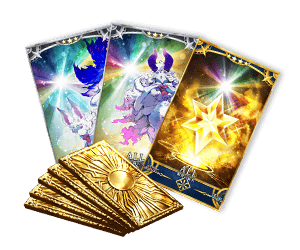 |
| 追加道具 | 能交換次數 | 1次交換所需的 魔力稜鏡數 |
|---|---|---|
| 【期間限定】呼符 | 5次 | 20個 |
| 【期間限定】叡智的猛火ALL★4(SR)10張套組 | 5次 | 40個 |
| 【期間限定】英靈結晶・星之芙芙ALL★3(HP) | 20次 | 15個 |
| 【期間限定】英靈結晶・太陽之芙芙ALL★3(ATK) | 20次 | 15個 |
|
在官方推特上方固定顯示的「1000萬DL突破宣傳活動舉辦！能從對象★4(SR)Servant之中得到喜愛的1位！」推特的轉推數，在下述的期間內達成10萬轉推的話，贈送豪華報酬給遊玩遊戲的全部Master！ |
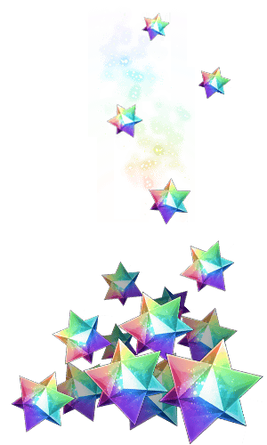 |
◆舉辦期間◆
2017年9月17日(日) 官方推特上的推特刊載後～9月23日(六) 22:59
◆配發期間◆
2017年9月24日(日) 17:00～10月2日(一) 2:59
| 達成目標(轉推數) | 達成報酬 |
|---|---|
| 【已達成】10萬轉推 | 1000萬DL突破記念 聖晶石30個 |
對全部的Master對象，「Servant的持有欄位」與「概念禮裝的持有欄位」追加50欄位擴張。
因此300欄位擴張至所持欄位350欄位。
另外，達文西工房內的「Servant保管欄位增加」「概念禮裝保管欄位增加」，追加消耗魔力稜鏡可追加的保管欄位上限數，格外追加10次份(合計50欄位)。
【持有欄位的擴張數】
| 對象的持有欄位 | 擴張數 |
|---|---|
| Servant持有欄位 | 300→350 |
| 概念禮裝持有欄位 | 300→350 |
【保管欄位的擴張數】
| 對象的保管欄位 | 剩餘次數 | 最大擴張時 |
|---|---|---|
| Servant保管欄位增加 | 20次→30次(10次份追加) | 200→250(50欄位追加) |
| 概念禮裝保管欄位增加 | 20次→30次(10次份追加) | 200→250(50欄位追加) |
※請注意Servant保管欄位的擴張及概念禮裝保管欄位的擴張，關於1次的擴需要魔力稜鏡50個。
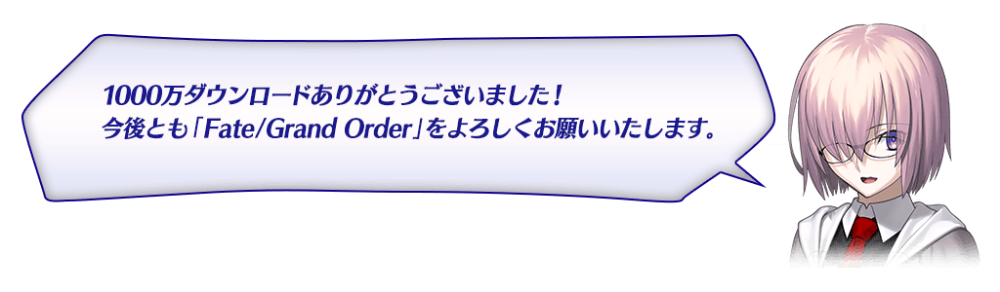
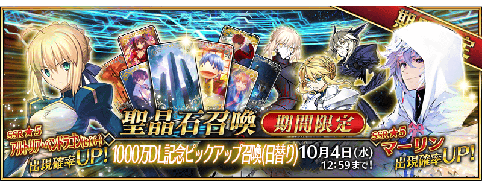
◆「1000萬DL記念Pick Up召喚(每日交替)」期間◆
期間:2017年9月20日(三) 17:00～10月4日(三) 11:59
以期間限定舉辦「1000萬DL記念Pick Up召喚(每日交替)」！
記念1000萬DL突破「★5(SSR) 梅林」以期間限定登場！
這次包含上述對象3位的Servant以每日交替Pick Up！
對象的★5(SSR)Servant「★5(SSR)梅林」「★5(SSR)阿爾托莉亞・潘德拉剛(Saber)」「★5(SSR)阿爾托莉亞・潘德拉剛(Lancer)」出現機率提升！
另外，期間中「★4(SR)阿爾托莉亞・潘德拉剛〔Alter〕(Saber)」「★4(SR)阿爾托莉亞・潘德拉剛〔Alter〕(Lancer)」常駐Pick Up！
詳情請在聖晶石召喚畫面左下的召喚詳細確認。
※梅林在Pick Up期間結束後，不會追加到故事召喚。
Pick Up期間中，期間限定Servant、Pick Up Servant的出現機率提升！
10次召喚中確定1張★4(SR)以上和確定1位★3(R)以上的Servant！
※確定★4(SR)以上包含Servant和概念禮裝。
※所謂「出現機率提升」意指比同稀有度的Servant及概念禮裝出現機率更高的設定。
| 每日交替Pick Up期間 | 每日交替Pick Up內容 |
|---|---|
| 9月20日(三) 17:00～ 9月27日(三) 22:59 | 梅林 |
| 9月27日(三) 23:00～9月28日(四) 22:59 | 阿爾托莉亞・潘德拉剛(Saber) |
| 9月28日(四) 23:00～9月29日(五) 22:59 | 阿爾托莉亞・潘德拉剛(Lancer) |
| 9月29日(五) 23:00～9月30日(六) 22:59 | 梅林 阿爾托莉亞・潘德拉剛(Saber) 阿爾托莉亞・潘德拉剛(Lancer) |
| 9月30日(六) 23:00～10月1日(日) 22:59 | 梅林 |
| 10月1日(日) 23:00～10月2日(一) 22:59 | 梅林 阿爾托莉亞・潘德拉剛(Saber) |
| 10月2日(一) 23:00～10月3日(二) 22:59 | 梅林 阿爾托莉亞・潘德拉剛(Lancer) |
| 10月3日(二) 23:00～10月4日(三) 11:59 | 梅林 阿爾托莉亞・潘德拉剛(Saber) 阿爾托莉亞・潘德拉剛(Lancer) |
※請注意會以每日交替變更Pick Up的Servant。
※阿爾托莉亞・潘德拉剛(Lancer)、阿爾托莉亞・潘德拉剛〔Alter〕(Saber)、阿爾托莉亞・潘德拉剛〔Alter〕(Lancer)就算未通過章節也能入手。
介紹梅林、阿爾托莉亞・潘德拉剛(Saber)、阿爾托莉亞・潘德拉剛(Lancer)的寶具演出！
在Fate/Grand Order官方網站內的公告中，公開了「★5(SSR)梅林」「★5(SSR)阿爾托莉亞・潘德拉剛(Saber)」「★5(SSR)阿爾托莉亞・潘德拉剛(Lancer)」的寶具演出。敬請確認。
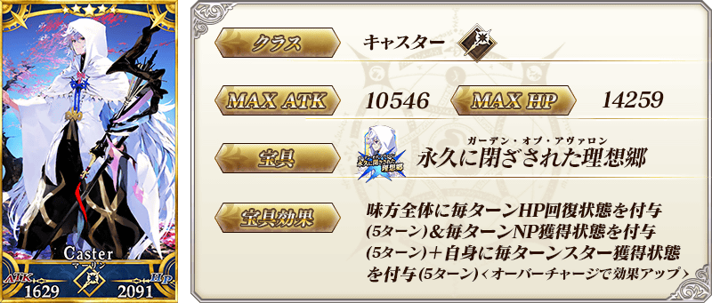
※與在第七章做為NPC Servant登場時，一部份寶具效果相異。
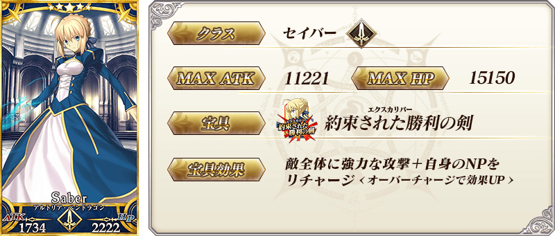
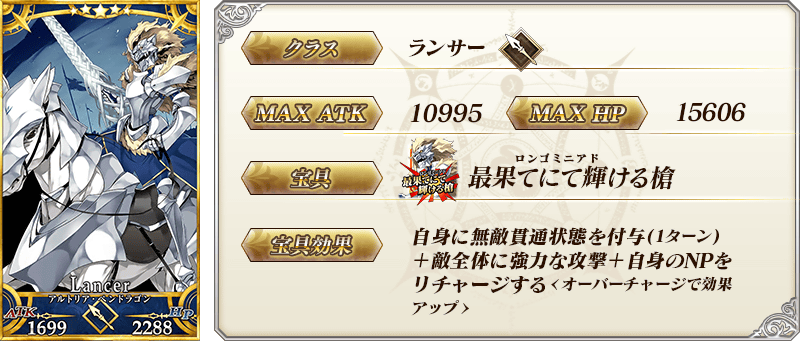

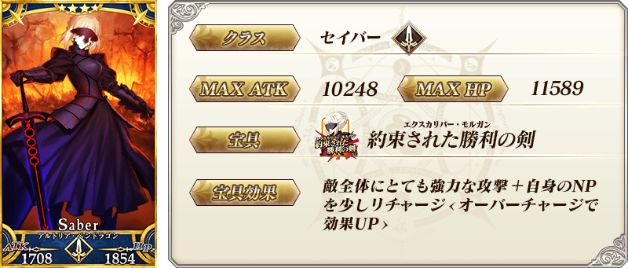
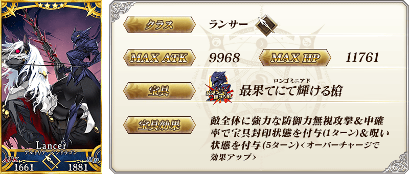
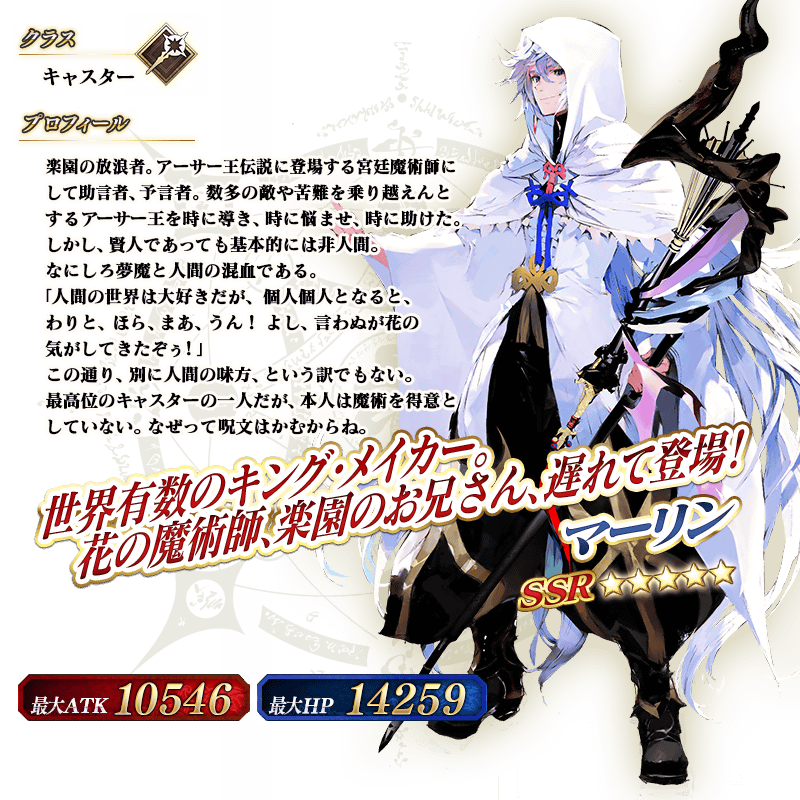
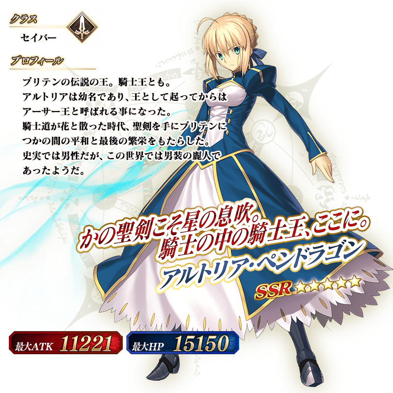
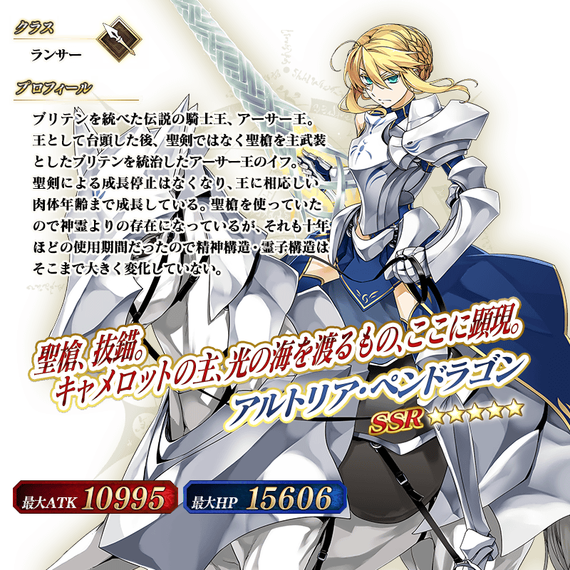